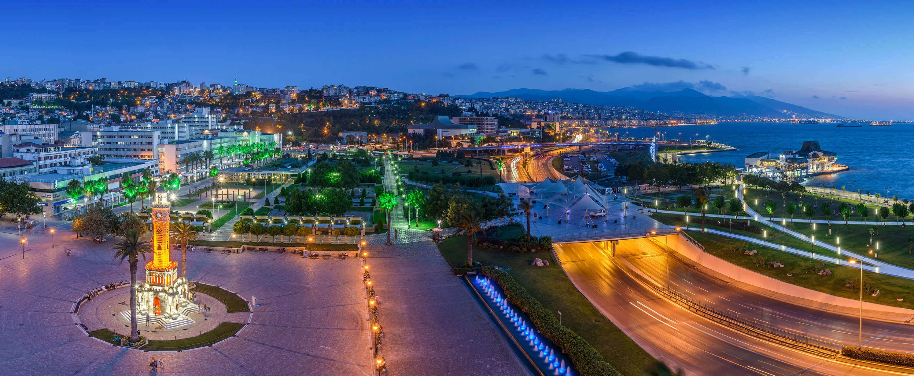

İzmir'de Gezilecek Yerler:
İzmir gezilip görülmeye değer bir şehirdir. Zengin tarihi ve kültürel mirası, muhteşem doğal güzellikleri, lezzetli mutfağı ve canlı atmosferiyle ziyaretçilerine unutulmaz bir deneyim sunar.
- Kemeraltı Çarşısı
- İzmir Saat Kulesi ve Konak Meydanı
- İzmir Kordonboyu
- Asansör
- Agora Antik Kenti
- Alsancak
Kemeraltı Çarşısı, İzmir'in tarihi ve kültürel dokusunu yansıtan önemli bir alışveriş ve turistik bölgedir. İzmir'in Konak semtinde yer alan bu tarihi çarşı, daracık sokakları, çeşitli dükkanları ve zengin ticari geçmişiyle bilinir. Osmanlı döneminden kalma tarihi yapılarla çevrili olan Kemeraltı, çeşitli ürünlerin satıldığı dükkânlarıyla ünlüdür. Burada geleneksel el işi ürünler, halılar, hediyelik eşyalar, baharatlar, yerel yiyecekler ve daha birçok ürün bulunabilir. Ayrıca çarşı içerisinde tarihi camiler, çeşmeler ve hanlar da ziyaret edilebilir.
Kemeraltı Çarşısı, İzmir'de alışveriş yapmak ve şehrin tarihini hissetmek isteyen ziyaretçiler için önemli bir durak noktasıdır.
İzmir Saat Kulesi ve Konak Meydanı, İzmir'in simgesi haline gelmiş önemli bir tarihi ve kültürel mekandır. Saat Kulesi, 1901 yılında inşa edilmiştir ve İzmir'in sembol yapılarından biridir. Konak Meydanı ise şehrin merkezi noktalarından biridir ve çeşitli tarihi yapılarla çevrilidir. Bu alan, İzmir'in önemli buluşma noktalarından biri olup, ziyaretçilere şehrin tarihini ve atmosferini deneyimleme fırsatı sunar.
İzmir Kordonboyu, İzmir'in Ege Denizi kıyısında yer alan popüler bir sahil bölgesidir. Yürüyüş yolları, parkları ve çeşitli dinlenme alanlarıyla ünlüdür. Şehrin simgelerinden biri olan Kordonboyu, yerli ve yabancı turistlerin sıkça ziyaret ettiği bir yerdir. Burada yürüyüş yapabilir, deniz manzarasının tadını çıkarabilir, çeşitli kafelerde oturabilir veya şehrin güzel atmosferini hissedebilirsiniz. Özellikle akşam saatlerinde burada güneşin batışını izlemek oldukça keyiflidir. İzmir Kordonboyu, şehrin sosyal hayatının önemli bir parçasıdır ve ziyaretçilerine dinlendirici bir atmosfer sunar.
İzmir Asansör, şehrin tarihi sembollerinden biridir ve İzmir'in Karataş semtinde yer alır. 1907 yılında inşa edilen bu tarihi asansör, şehrin yüksek noktalarını deniz kıyısına bağlamak amacıyla yapılmıştır. Asansör, tarihi ve mimari açıdan önemli bir yapı olmasının yanı sıra, İzmir'in panoramik manzarasını görmek için de popüler bir noktadır. Ziyaretçiler, asansörün üst katlarına çıkarak şehrin muhteşem manzarasını izleyebilir ve keyifli vakit geçirebilirler. İzmir Asansör, şehrin tarihine tanıklık etmiş ve günümüzde turistlerin ilgisini çeken önemli bir turistik cazibe merkezidir.
Agora Antik Kenti, İzmir'in Konak ilçesinde bulunan ve antik dönemde önemli bir ticaret merkezi olan bir arkeolojik alanı ifade eder. Bu antik kent, Roma İmparatorluğu döneminde önemli bir ticaret merkezi olarak işlev görmüştür. Agora, pazar yeri, dini törenlerin yapıldığı bir meydan ve çeşitli idari binaların bulunduğu bir alandır.
Alsancak, İzmir'in popüler ve canlı semtlerinden biridir. Şehrin merkezi Konak ilçesine bağlı olan Alsancak, alışveriş, eğlence ve kültür merkezi olmasıyla tanınır. Çeşitli mağazaların, restoranların, kafelerin ve barların bulunduğu bu semt, günün her saati hareketli bir atmosfere sahiptir. Ayrıca Alsancak, tarihi izler taşıyan bazı önemli yapıları da barındırır. İzmir'de alışveriş yapmak, yemek yemek veya gece hayatını deneyimlemek isteyenler için Alsancak, vazgeçilmez bir destinasyondur.